항공산업기사 (2010-05-09 기출문제)
1과목: 항공역학
1. 에어포일(Airfoil) “NACA 23012”에서 첫 번째 자리 숫자가 의미하는 것은?
- 최대캠버의 크기가 시위(chord)의 2% 이다.
- 최대캠버의 크기가 시위(chord)의 20% 이다.
- 최대캠버의 위치가 시위(chord)의 15% 이다.
- 최대캠버의 위치가 시위(chord)의 20% 이다.
(정답률: 80%)

2. 지름이 6.7ft 인 프로펠러가 2800rpm 으로 회전하면서 80mph 로 비행하고 있다면 이 프로펠러의 진행율은 약 얼마인가?
- 0.23
- 0.37
- 0.62
- 0.76
(정답률: 56%)
3. 고속 항공기에서 방향키 조작으로 빗놀이와 동시에 옆놀이 운동이 함께 일어나는 것처럼 비행기 좌표축에서 어떤한 축 주위에 교란을 줄 때 다른 축 주위에도 교란이 생기는 현상을 무엇이라 하는가?
- 실속(stall)
- 스핀(spin) 운동
- 커플링(coupling) 효과
- 자동 회전(Autorotation)
(정답률: 73%)
4. 다음과 같은 조건에서 헬리곱터의 원판하중은 약 몇 kgf/m2인가?
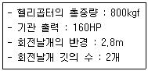
- 28.5
- 30.5
- 32.5
- 35.5
(정답률: 78%)
5. 비행기가 정상비행 시 110Km/h로 실속한다면 하중배수가 1.3인 경우 실속속도는 약 몇 Km/h 인가?
- 34
- 68
- 125
- 250
(정답률: 71%)
6. 비행기가 최소 속도를 나타낸 식으로 옳은 것은? (단, W : 비행기무게, ρ : 밀도, S : 기준면적,CLmax : 최대양력계수 이다.)
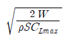
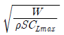
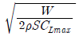
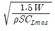
(정답률: 87%)
7. 항력계수가 0.02 이며, 날개 면적이 20m2인 항공기가 150m/s 로 등속도 비행을 하기 위해 필요한 추력은 약 몇 kgf 인가? (단, 공기의 밀도는 0.125kgf-s2/m4이다.)
- 433
- 563
- 643
- 723
(정답률: 71%)
8. 비행기의 조종력을 경감시키는 공력평형장치가 아닌 것은?
- 혼 밸런스(horn balance)
- 조종 밸런스(control balance)
- 내부 밸런스(internal balance)
- 앞전 밸런스(leading edge balance)
(정답률: 63%)
9. 운항중인 항공기에서 조종면의 조종효과를 발생시키기 위해서 주로 변화시키는 것은?
- 날개골의 면적
- 날개골의 두께
- 날개골의 캠버
- 날개골의 깊이
(정답률: 86%)
10. 항공기에는 층류가 난류로 바뀌는 것을 지연시키기 위해 층류 에어포일(laminar airfoil)을 사용하는데 이는 무엇을 감소시키기 위한 것인가?
- 간섭항력
- 마찰항력
- 조파항력
- 형상항력
(정답률: 62%)
11. 항공기의 비행성능을 좋게 하기 위하여 날개 끝부분에 장착하는 윙렛(winglet)의 직접적인 역학적 효과는?
- 양력증가
- 마찰항력감소
- 실속방지
- 유도항력감소
(정답률: 68%)
12. 선회각 Φ로 정상 수평 선회비행하는 비행기의 하중배수를 나타낸 식은? (단, W는 항공기의 무게이다.)
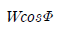
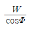
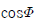
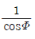
(정답률: 74%)
13. 공기력 중심(Aerodynamic center)을 옳게 설명한 것은?
- 날개에 발생하는 합성력이 작용하는 점
- 받음각이 변해도 피칭 모멘트 값이 일정한 점
- 받음각이 변하면 피칭 모멘트 값이 변화하지만 양력계수가 일정한 점
- 받음각이 변화함에 따라 피칭 모멘트 값이 0(zero) 이 되는 점
(정답률: 61%)
14. 비행기가 230km/h 로 수평비행 할 때 비행기의 상승률이 8m/s 라고 하면, 이 비행기 상승각은 약 몇°인가?
- 4.8
- 5.2
- 7.2
- 9.4
(정답률: 67%)
15. 프로펠러의 효율에 대한 설명으로 가장 옳은 것은?
- 비행속도가 증가하면 깃각이 작아져야 한다.
- 비행기가 이륙하거나 상승 시에는 깃각을 크게 해야 한다.
- 프로펠러의 효율을 좋게 하기 위해서 진행율이 작을 때는 깃각을 크게 해야 한다.
- 비행중 프로펠러 깃각이 변하는 가변피치 프로펠러를 사용하면 프로펠러 효율이 좋다.
(정답률: 75%)
16. 비행기에 옆놀이 모멘트(Rolling moment)를 주는 조종면은?
- 승강키
- 도움날개
- 방향키
- 고양력장치
(정답률: 86%)
17. 면적이 20m2인 도관을 공기가 15m/s 의 속도로 흐른다면 도관을 지나는 공기의 질량 유량은 몇 kg/s인가? (단, 공기의 밀도가 2kg/m3이다.)
- 30
- 40
- 300
- 600
(정답률: 58%)
18. 헬리곱터의 정지비행 상승한도(hovering ceiling)를 마력을 이용하여 옳게 표현한 것은?
- 이용마력 ＞ 필요마력
- 이용마력 = 필요마력
- 이용마력 ＜ 필요마력
- 유도항력마력 = 이용마력 + 필요마력
(정답률: 81%)
19. 다음 중 날개 상면에 공중 스포일러(flight spoiler)를 설치하는 이유로 옳은 것은?
- 양력을 증가시키기 위해
- 활공각을 감소시키기 위해
- 최대 항속거리를 얻기 위하여
- 고속에서 도움날개의 역할을 보조하기 위하여
(정답률: 82%)
20. 지구의 중력가속도가 일정한 것으로 가정하여 정한 고도는?
- 압력 고도
- 기하학적 고도
- 밀도 고도
- 지구 포텐셜 고도
(정답률: 76%)
2과목: 항공기관
21. 6기통, 4행정 왕복기관의 제동마력이 300ps, 회전속도가 2400rpm 일 때 토크는 약 몇 kgf·m 인가? (단, 1ps 는 75kgf·m/s 이다.)
- 67.8
- 75.2
- 89.5
- 119.3
(정답률: 39%)
22. 왕복기관에 발생하는 노크현상과 관계가 가장 먼 것은?
- 압축비
- 연료의 기화성
- 실린더 온도
- 연료의 옥탄가
(정답률: 54%)
23. 다음 중 일반적으로 라인정비(line maintenance)에서 할 수 없는 작업은?
- 배기노즐 장탈
- 기관 압축기 분해
- 보기장치의 교환
- 연료제어장치 교환
(정답률: 84%)
24. 왕복기관 윤활계통에서 윤활유의 역할이 아닌 것은?
- 금속가루 및 미분을 제거한다.
- 금속 부품의 부식을 방지한다.
- 연료에 수분의 침입을 방지한다.
- 금속면 사이의 충격 하중을 완충시킨다.
(정답률: 73%)
25. 가스터빈관의 열효율을 향상시키는 방법으로 가장 거리 가 먼 내용은?
- 터빈 냉각 방법을 개선한다.
- 배기가스온도를 증가시킨다.
- 기관의 내부 손실을 방지한다.
- 고온에서 견디는 터빈 재질을 사용한다.
(정답률: 80%)
26. 가스터빈기관의 이론 사이클에서 흡열반응은 어떤 시기에 이루어지는가?
- 정압 상태
- 정적 상태
- 단열 팽창
- 단열 압축
(정답률: 50%)
27. 왕복기관의 마그네토 브레이커 포인트(breaker point)가 고착되었다면 어떤 현상을 초래하는가?
- 기관 시동시 역화가 발생한다.
- 마그네토의 작동이 불가능하다.
- 고속 회전 점화시 과열현상이 발생한다.
- 스위치를 off해도 기관이 정지하지 않는다.
(정답률: 66%)
28. 화씨온도에서 물이 어는 온도와 끓는 온도는 각각 몇˚F 인가?
- 어는 온도 : 0 , 끓는 온도 : 100
- 어는 온도 : 12 , 끓는 온도 : 192
- 어는 온도 : 22 , 끓는 온도 : 202
- 어는 온도 : 32 , 끓는 온도 : 212
(정답률: 81%)
29. 그림과 같은 브레이튼 사이클(brayton cycle)에서 2-3과정은?
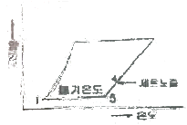
- 압축과정
- 연소과정
- 팽창과정
- 방출과정
(정답률: 74%)
30. 가스터빈기관의 역추력 장치에 관한 설명으로 틀린 것은?
- 정상 착륙시 제동 능력 및 방향 전환 능력을 도우며, 제동 장치의 수명을 연장시켜 준다.
- 공기 역학적 차단 장치인 cancade reverser와 기계적차단 장치인 clamshell reverser가 있다.
- 항공기의 속도가 느린 시기에 효과가 있으며 속도가 빠른 경우에는 배기가스가 기관에 재흡입되어 실속을 일으킬 수 있다.
- 터빈 리버서는 전체 역추력의 20~30% 정도에 지나지 않고, 고장의 발생률이 높아 팬 리서버만을 사용하기도 한다.
(정답률: 70%)
31. 축류형 압축기에서 1단(stage)의 의미를 옳게 설명한 것은?
- 저압압축기(low compressor)을 말한다.
- 고압압축기(high compressor)을 말한다.
- 1열의 로터(rotor)와 1열의 스테이터(stator)를 말한다.
- 저압압축기(low compressor)와 고압압축기(highcompressor)를 합하여 일컫는 말이다.
(정답률: 86%)
32. 아음속 항공기에 사용되는 기관의 공기흡입 덕트는 일반적으로 어떤 형태인가?
- 확산형 덕트(divergent duct)
- 수축형 덕트(convergent duct)
- 수축-확산형 덕트(convergent-divergent duct)
- 가변공기 흡입 덕트(variable ceometry air inlet duct)
(정답률: 80%)
33. 다음 중 프로펠러 블레이드(propeller blade)에 작용하는 응력이 아닌 것은?
- 인장응력
- 구심응력
- 굽힘응력
- 비틀림 응력
(정답률: 83%)
34. 다음 중 후기 연소기가 없는 터보제트기관에서 전압력이 가장 높은 곳은?
- 공기 흡입구
- 압축기 입구
- 압축기 출구
- 터빈 출구
(정답률: 75%)
35. 왕복기관의 저속(idle)에서 혼합기가 아주 희박할 때 발생하는 가장 중요한 현상은?
- 기관 rpm이 상승한다.
- 출력이 급격히 증가한다.
- 시동시 역화가 발생할 수 있다.
- 점화플러그에 탄소를 침착히킨다.
(정답률: 83%)
36. 비행속도가 V, 회전속도가 n(rpm)인 프로펠러의 1회전 소요시간이 60/n초 일 때 유효피치를 나타내는 식은?
- 60V/n
- 60n/V
- nV/60
- V/60
(정답률: 72%)
37. 터보팬 제트기관의 1차 공기량이 50kgf/s, 2차 공기량 60kgf/s, 1차 공기 배기속도 170m/s, 2차 공기 배기속도 100m/s 이라면 이 기관의 바이패스 비(bypass ratio)는 얼마인가?
- 0.59
- 0.83
- 1.2
- 1.7
(정답률: 55%)
38. 왕복기관의 지상 시운전시 최대 마력이 되지 않는다면 예상되는 원인이 아닌 것은?
- 기화기에 결빙이 형성되어 있다.
- 이그나이터의 간극이 규정값 이상이다.
- 기화기 히트(heat)가 ‘ON’위치에 있다.
- 스로틀(throttle)이 완전히 전개되지 않는다.
(정답률: 47%)
39. 항공기 왕복기관에서 다이나믹 댐퍼의 주된 역할로 옳은 것은?
- 정적평형 유지
- 축에 가해지는 압축하중 방지
- 크랭크축의 원심력 하중 증가
- 크랭크축의 비틀림(torsion)진동을 흡수
(정답률: 81%)
40. 기관의 공기 흡입구에 얼음이 생기는 것을 방지하기 위한 기관 방빙 방법으로 옳은 것은?
- 더운 물을 기관 인렛(inlet) 속으로 분사 한다.
- 배기가스를 인렉 스트러트(inlet strut)에 보낸다.
- 압축기 통과 전의 청정한 공기를 입구(inlet) 쪽으로 순환시킨다.
- 압축기의 고온 브리드 공기를 흡입구(intake), 인렛 가이드 베인(inlet guide vane)으로 보낸다.
(정답률: 86%)
3과목: 항공기체
41. 그림과 같이 길이 2m인 외팔보에 2개의 집중하중 300kg, 100kg 이 작용할 때 고정단에 생기는 최대굽힙모멘트의 크기는 약 몇 kg·m 인가?
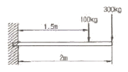
- 400
- 650
- 750
- 800
(정답률: 76%)
42. 리벳작업을 위한 구멍뚫기 작업 시 주의하여야 할 사항이 아닌 것은?(오류 신고가 접수된 문제입니다. 반드시 정답과 해설을 확인하시기 바랍니다.)
- 드릴작업 후 리밍작업을 한다.
- 구멍은 리벳 직경보다 약간 크게 한다.
- 리밍작업시 리머를 뺄 때 회전방향을 반대로 한다.
- 드릴작업 후 구멍의 버(burr)는 되도록 보존하도록 한다.
(정답률: 77%)
43. 일정온도에서 시간에 따라 재료의 변형율이 변화하는 것을 무엇이라 하는가?
- creep
- fatigue
- strain
- buckling
(정답률: 90%)
44. 리벳의 재질에 따른 기호와 리벳머리의 표시를 짝지은 것으로 틀린 것은?(오류 신고가 접수된 문제입니다. 반드시 정답과 해설을 확인하시기 바랍니다.)
- A(1100) - 표시없음
- D(2017) - 머리에 오목한 점이 있다.
- B(5⑤6) - 머리에 + 표로 표시되어 있다.
- DD(2024)- 머리에 두 개의 튀어나온 점이 있다.
(정답률: 63%)
45. 약 1500˚F까지 온도가 올라갈 수 있는 기관부위에 사용 할 수 있는 안전결선재료는?
- Cu 합금
- 5⑤6 AL 합금
- Ni-Cd 합금 (모넬)
- Ni-Cr-Fe 합금 (인코넬)
(정답률: 67%)
46. 항공기의 여러 곳에 가장 많이 사용되며 그립이 없고 보통 납작머리, 둥근머리, 와셔머리 등으로 되어 있는 스크류는?
- 구조용 스크류
- 테이퍼핀 스크류
- 기계용 스크류
- 셀프테핑 스크류
(정답률: 71%)
47. 2차 조종면 중 평행탭(balance tab)에 대한 설명으로 옳은 것은?
- 조종특성을 위해 케이블에 의해 수시로 조절가능한 탭이다.
- 소형 항공기에 적당하며 저항이 크고 진동이 심한 장소에 장착된다.
- 1차 조종면과 2차 조종면이 스프링을 통해 연결되어 있어 1차 조종면과 2차 조종면이 서로 반대 작동한다.
- 1차 조종면과 2차 조종면은 서로 반대방향으로 작동하며, 1차 조종면과 2차 조종면에 작용하는 중압이 평행되는 위치에서 1차 조종면의 위치가 정해지는 방식이다.
(정답률: 68%)
48. 그림과 같은 응력-변형률곡선에서 극한응력을 나타내는 곳은? (단, σ는 응력, ε은 변형률을 나타낸다.)
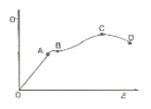
- A
- B
- C
- D
(정답률: 84%)
49. 알클래드(Alclad) 판은 어떤 목적으로 알루미늄 합금판 위에 순수 알루미늄을 피복한 것인가?
- 공기 저항 감소
- 인장강도의 증대
- 기체 전지거장 감소
- 공기 중에서의 부식방지
(정답률: 86%)
50. 항공기기체가 기내 압력이 높아진다면 기체를 연결한 리베트(rivet)가 받는 주된 힘은?
- 인장력
- 전단력
- 압축력
- 비틀림
(정답률: 68%)
51. 항공기기체의 세미모노코크구조 형식에서 동체의 종방향 구조부재로만 짝지어진 것은?
- 스파(spar), 리브(rib)
- 리브(rib), 프레임(frame)
- 스파(spar), 스트링거(stringer)
- 론저론(longeron), 스트링거(stringer)
(정답률: 74%)
52. 실속 속도가 150km/h인 비행기를 300km/h의 속도로 수평비행을 하다가 갑자기 조종간을 당겨 최대 받음각의 자세를 취하여 CLmax인 상태로 하였을 때 하중계수는?
- 1
- 2
- 4
- 8
(정답률: 54%)
53. 알루미늄의 표면에 인공적으로 얇은 산화피막을 형성하는 방법은?
- 파커라이징
- 주석 도금 처리
- 아노다이징
- 카드뮴 도금 처리
(정답률: 88%)
54. 알루미늄합금과 구조용 강철과의 기계적 성질에 대한 설명으로 옳은 것은?
- 동일한 하중에 대한 변형량이 알루미늄 합금이 구조용 강철에 비해 약 3배 정도이다.
- 알루미늄 합금은 구조용 강철에 비해 제 1 변태점이 약300℃ 정도가 높다.
- 구조용 강철의 탄성계수는 알루미늄 합금의 탄성계수의 약 2배 정도이다.
- 제 1 변태점만을 고려 했을 때 알루미늄 합금은 구조용 강철보다 초음속 여객기의 표피에 적합하다.
(정답률: 62%)
55. 케이블 조종계통에서 케이블의 장력을 조절할 수 있는 부품은?
- 풀리(pulley)
- 턴 버클(turn buckle)
- 벨 크랭크(bell crank)
- 케이블 텐션 미터(cable tension meter)
(정답률: 73%)
56. 플랜지(flange)가공작업에서 플랜지의 곡선을 외부로 볼록하게 가공하는 작업을 무엇이라고 하는가?
- 압축플랜지
- 인장플랜지
- 복합플랜지
- 볼록플랜지
(정답률: 54%)
57. 알루미늄 합금 중 이질금속간의 부식을 방지하기 위하여 나머지 셋과 접촉시키지 않아야 되는 것은?
- 1100
- 2014
- 3003
- 5⑤2
(정답률: 59%)
58. 조종 케이블의 점검에 대한 설명 중 가장 거리가 먼 내용은?
- 케이블의 손상점검은 헝겊을 이용한다.
- 케이블 내부에 부식이 있으면 케이블을 교환한다.
- 케이블 외부 부식은 솔벤트에 담궈 녹여서 제거한다.
- 케이블을 역방향으로 비틀어서 내부부식을 점검한다.
(정답률: 72%)
59. FRCM의 모재(matrix)중 사용온도 범위가 가장 큰 것은?
- FRC
- BMI
- FRM
- FRP
(정답률: 75%)
60. 항공기 기체 구조의 리깅(rigging) 작업 시 구조의 얼라이먼트(Alignment) 점검 사항이 아닌 것은?
- 날개 상반각
- 날개 취부각
- 수평 안정판 장착각
- 항공기 파일론 장착면적
(정답률: 70%)
4과목: 항공장비
61. 인공위성을 이동하여 통신, 항버, 감시 및 항공관제를 통합 관리하는 항공운항지원시스템의 명칭은?
- 위성 항행 시스템
- 항공 운행 시스템
- 위성 통합 시스템
- 항공 관리 시스템
(정답률: 65%)
62. 객실 여압계통에서 대기압이 객실안의 기압보다 높은 경우 객실로 자유롭게 들어오도록 사용하는 장치로 진공밸브라고도 하는 것은?
- 부압 릴리프 밸브
- 객실 하강율 조절기
- 압축비 한계 스위치
- 슈퍼차저 오버스피드 밸브
(정답률: 82%)
63. 압력조절기에서 킥인(kick-in)과 킥아웃(kick-out) 상태는 어떤 밸브의 상호작용으로 하는가?
- 체크밸브와 릴리프밸브
- 체크밸브와 바이패스밸브
- 흐름조절기와 릴리프밸브
- 흐름평형기와 바이패스밸브
(정답률: 76%)
64. 다음 중 소형 항공기의 연속 전기부하가 아닌 것은?
- 착륙등
- 기관 계기
- VHF 수신기
- 연료 펌프
(정답률: 60%)
65. 항공기 기관의 구동축과 발전기축 사이에 장착하여 주파수를 일정하게 만들어주는 장치는?
- 출력 구동 장치
- 변속 구동 장치
- 정속 구동 장치
- 주파수 구동 장치
(정답률: 80%)
66. 항공기를 지상에서 자차수정 할 때의 주의 사항으로 틀린 것은?
- 조종계통을 중립 위치로 할 것
- 항공기를 수평 상태로 유지할 것
- 기관계통은 작동 상태로 놓을 것
- 전기계통은 OFF 위치에 놓을 것
(정답률: 65%)
67. 다음 중 항공기의 내부조명등에 해당하지 않는 것은?
- 계기등
- 객실 조명등
- 항법등
- 화물실 조명등
(정답률: 85%)
68. 전기저항식 온도계의 온도 수감부(temperature bulb)가 단선되었을 때 지시값의 변화로 옳은 것은?
- 단선 직전의 값을 지시한다.
- 지시계의 지침은 ‘0’을 지시한다.
- 지시계의 지침은 저온측의 최소값을 지시한다.
- 지시계의 지침은 고온측의 최대값을 지시한다.
(정답률: 58%)
69. 항공기에 사용되는 축전지의 충전에 대한 설명으로 옳은 것은?
- 정전류 충전법은 병렬연결을 기본으로 한다.
- 정전압 충전법은 직렬연결을 기본으로 한다.
- 납축전지는 전해액의 비중으로 충전상태를 알 수 있다.
- 정전압 충전버은 충전 완료시기를 예측할 수 있는 장치가 있다.
(정답률: 71%)
70. 항공기 전기·전자 장비품을 전기적으로 본딩(bonding)하는 이유로 옳은 것은?
- 이·착륙시 진동을 흡수하게 하기 위하여
- 정전하(static charge)의 축적을 허용하기 위하여
- 항공기 장비품의 구조를 보완하고 진동을 줄이기 위해
- 전기·전자 장비품에 대전되어 있는 정전기를 방전하기 위하여
(정답률: 79%)
71. 다음 전기회로에서 총저항과 축전지가 부담하는 전류는 각각 얼마인가?
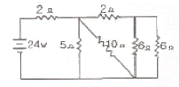
- 2Ω, 12A
- 4Ω, 8A
- 4Ω, 6A
- 6Ω, 4A
(정답률: 52%)
72. 항공기 계기에 대한 설명으로 틀린 것은?
- 선회계는 섭동성만을 이용한 계기이다.
- 방향지시계는 강직성을 이용한 계기이다.
- 수평지시계는 기수 방향에 대한 수직인 자이로 축을 갖고 있다.
- 회전체의 회전수를 지시하는 계기는 강직성과 섭동성을 모두 이용한 계기이다.
(정답률: 60%)
73. 다음 중 피토압에 영향을 받지 않는 계기는?
- 속도계
- 고도계
- 승강계
- 선회 경사계
(정답률: 84%)
74. 신호에 따라 반송파의 진폭을 변화시키는 변조방식은?
- PCM 방식
- FM 방식
- AM 방식
- PM 방식
(정답률: 70%)
75. 활주로 진입로 상공을 통과하고 있다는 것을 조종사에게 알리기 위한 지상장치는?
- 대지접근경보장치(GPWS)
- 로컬라이저(localizer)
- 마커 비컨(marker beacon)
- 글라이드 슬로프(glide slope)
(정답률: 67%)
76. 대기속도계의 색표시에서 플랩을 조작하는 것과 가장 관계가 깊은 색은?
- 녹색
- 황색
- 백색
- 적색
(정답률: 82%)
77. 작동유의 점성이 클수록 흐름과 압력손실은 각각 어떠한가?
- 흐름은 느리고 압력손실은 크다
- 흐름은 느리고 압력손실은 작다.
- 흐름은 빠르고 압력손실은 크다.
- 흐름은 빠르고 압력손실은 작다.
(정답률: 69%)
78. 비행상태에 따른 객실고도에 대한 설명으로 틀린 것은?
- 착륙시 지상고도와 일치시킨다.
- 순항시 객실고도는 8500ft를 유지한다.
- 하강시 객실고도는 일정비율로 감소시킨다.
- 상승시 객실고도는 일정비율로 증가시킨다.
(정답률: 87%)
79. 다음 중 공기식 제빙장치가 사용되는 곳이 아닌 곳은?
- 조종날개
- 수직 안정판 앞전
- 날개 앞전
- 프로펠러 깃의 앞전
(정답률: 62%)
80. 면적이 2in2인 A 피스톤과 10in2 인 B 피스톤을 가진 실린더가 유체역학적으로 서로 연결되어 있을 경우, A 피스톤에 20lbs의 힘이 가해질 때 B 피스톤에 발생되는 압력은 몇 psi 인가?
- 5
- 10
- 20
- 100
(정답률: 37%)